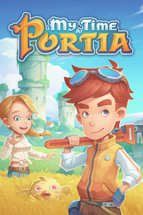

My Time at Portia
Detalles
 |
|
| Tiempo de juego | No Jugado |
| Última actividad | Nunca |
| Añadido | 7/22/2025 12:00:30 |
| Modificado | 7/22/2025 12:14:30 |
| Estado de finalización | Not Played |
| Librería | Playnite |
| Fuente | 2TB GAS |
| Plataforma | Macintosh PC (Windows) |
| Fecha de lanzamiento | |
| Puntuación de la Comunidad | 90 |
| Puntuación de la Crítica | 73 |
| Puntuación de usuario | |
| Género | Aventura Casual Indie Rol Simuladores |
| Desarrollador | Pathea Games |
| Editor | Focus Entertainment |
| Característica | Cloud Saves Compat. Total Con Mando Cromos De Logros De Préstamo Familiar Remote Play En Móvil Remote Play En Tableta Remote Play En TV Un Jugador |
| Enlaces | Punto de encuentro Discusiones Guías Noticias Página de la tienda PCGamingWiki Logros |
| Tag | Agricultura Aventura Caricaturescos Casuales Construcción Exploración Fabricación Indie Minería Mundo abierto Posapocalípticos Protagonista femenina Relajantes Rol Sandbox Simulación Simulador agrícola Simulador de vida Supervivencia Un jugador |
Descripción
¡Empieza una nueva vida en la encantadora ciudad de Portia! ¡Devuelve el taller abandonado de tu padre a su antigua gloria completando encargos, cultivando, criando animales y entablando amistad con los peculiares habitantes de esta encantadora tierra posapocalíptica!
Con el manual y la mesa de trabajo de tu padre, deberás reunir, excavar y crear hasta convertir tu taller en el número uno de Portia. Ayuda a los lugareños a reconstruir la ciudad y descubre los secretos que oculta. ¡Prepárate… no será fácil!
La ciudad de Portia está llena de gente amistosa por conocer. ¡Haz amigos, completa misiones, intercambia regalos, ve a citas y deja que el romance florezca!
Inspirado por la magia de Studio Ghibli, My Time at Portia te transporta a un mundo de fantasía que no olvidarás. ¿Cómo pasarás el tiempo en Portia?
CONSTRUYE TU TALLER: ¡Convierte el taller abandonado de tu padre en el mejor de Portia! Reúne recursos y fabrica cosas hasta conquistar el corazón de la comunidad local, mientras trabajas a diario en tus encargos y en las peticiones de los lugareños.

GESTIONA TU PROPIA GRANJA: ¡Cultiva y nutre tus propios cultivos, cría animales y convierte los bosques vacíos que rodean tu taller en una pintoresca granja! My Time at Portia ofrece un enfoque innovador de la agricultura, permitiéndote aprovecharte de jardineras y de sistemas de irrigación semiautomáticos. ¡Hasta puedes montar en tu propio caballo o llama por la ciudad!

ÉCHALE CREATIVIDAD: ¡Convierte tu casa en un hogar! Dale tu toque personal con una emocionante selección de muebles fabricables, decoraciones y mejoras de taller. ¡No solo lucirá genial, sino que cada pieza aumentará las estadísticas a tu personaje!

ÚNETE A LA COMUNIDAD: ¡Forma parte de la extraordinaria comunidad de Portia! Llena de un colorido plantel de caras inolvidables con energéticas personalidades, rutinas diarias y emocionantes historias que compartir. Van a trabajar, cenan en restaurantes, hacen ejercicio e interactúan entre ellos de muchas formas interesantes. ¡Asegúrate de llegar a conocerlos a todos! Quién sabe, puede que te enamores.

EXPLORA Y COMBATE: Explora las ruinas y las mazmorras de Portia. Agarra tu pico, coge tu buscarreliquias y excava recursos y tesoros del pasado. ¡Asegúrate de llevar un arma contigo, hay hordas de temibles monstruos y jefes mortales entre tú y tu preciado botín!

MEJORA TUS HABILIDADES: Sube de nivel con varias habilidades que te ayudarán en tus aventuras. Mejora tus habilidades de fabricación, de combate o sociales según tu estilo de juego.

Y MUCHO MÁS: ¡My Time at Portia tiene algo para todo el mundo! Encuentra y explora nuevas tierras, participa en los festivales del juego o toma parte en muchas de las otras actividades, tú decides cómo invertir tu tiempo. ¿Por qué no pules tus habilidades culinarias y cocinas algo delicioso? Enfréntate a alguno de los muchos minijuegos. O relájate y pasa la tarde pescando. ¡Tú decides!

Con el manual y la mesa de trabajo de tu padre, deberás reunir, excavar y crear hasta convertir tu taller en el número uno de Portia. Ayuda a los lugareños a reconstruir la ciudad y descubre los secretos que oculta. ¡Prepárate… no será fácil!
La ciudad de Portia está llena de gente amistosa por conocer. ¡Haz amigos, completa misiones, intercambia regalos, ve a citas y deja que el romance florezca!
Inspirado por la magia de Studio Ghibli, My Time at Portia te transporta a un mundo de fantasía que no olvidarás. ¿Cómo pasarás el tiempo en Portia?
Características:
CONSTRUYE TU TALLER: ¡Convierte el taller abandonado de tu padre en el mejor de Portia! Reúne recursos y fabrica cosas hasta conquistar el corazón de la comunidad local, mientras trabajas a diario en tus encargos y en las peticiones de los lugareños.
GESTIONA TU PROPIA GRANJA: ¡Cultiva y nutre tus propios cultivos, cría animales y convierte los bosques vacíos que rodean tu taller en una pintoresca granja! My Time at Portia ofrece un enfoque innovador de la agricultura, permitiéndote aprovecharte de jardineras y de sistemas de irrigación semiautomáticos. ¡Hasta puedes montar en tu propio caballo o llama por la ciudad!
ÉCHALE CREATIVIDAD: ¡Convierte tu casa en un hogar! Dale tu toque personal con una emocionante selección de muebles fabricables, decoraciones y mejoras de taller. ¡No solo lucirá genial, sino que cada pieza aumentará las estadísticas a tu personaje!
ÚNETE A LA COMUNIDAD: ¡Forma parte de la extraordinaria comunidad de Portia! Llena de un colorido plantel de caras inolvidables con energéticas personalidades, rutinas diarias y emocionantes historias que compartir. Van a trabajar, cenan en restaurantes, hacen ejercicio e interactúan entre ellos de muchas formas interesantes. ¡Asegúrate de llegar a conocerlos a todos! Quién sabe, puede que te enamores.
EXPLORA Y COMBATE: Explora las ruinas y las mazmorras de Portia. Agarra tu pico, coge tu buscarreliquias y excava recursos y tesoros del pasado. ¡Asegúrate de llevar un arma contigo, hay hordas de temibles monstruos y jefes mortales entre tú y tu preciado botín!
MEJORA TUS HABILIDADES: Sube de nivel con varias habilidades que te ayudarán en tus aventuras. Mejora tus habilidades de fabricación, de combate o sociales según tu estilo de juego.
Y MUCHO MÁS: ¡My Time at Portia tiene algo para todo el mundo! Encuentra y explora nuevas tierras, participa en los festivales del juego o toma parte en muchas de las otras actividades, tú decides cómo invertir tu tiempo. ¿Por qué no pules tus habilidades culinarias y cocinas algo delicioso? Enfréntate a alguno de los muchos minijuegos. O relájate y pasa la tarde pescando. ¡Tú decides!